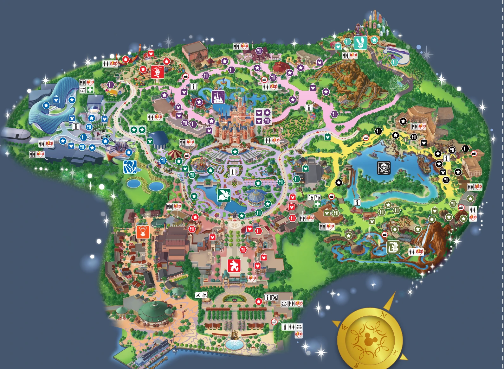

酒店与出发
05:30 起床，约 06:10 退房并寄存行李，目标 07:00 到主入口。若 4 日晚还住原酒店，无需退房。次日下午才去机场，记得安排 4 日晚住宿。
2026年10月4日 · 周日 · 2人
四个必刷优先：早享光轮、开园后热力追踪、加勒比海盗和飞跃地平线。中午看花车，下午视排队插入矿山车与光轮二刷。
园区路线

当日时间线
行前与现场
05:30 起床，约 06:10 退房并寄存行李，目标 07:00 到主入口。若 4 日晚还住原酒店，无需退房。次日下午才去机场，记得安排 4 日晚住宿。
两人各持门票和早享卡，带购票使用的身份证原件；早享二维码须在官方 App 或小程序实时出示。早享不开放疯狂动物城。
午餐可在巴波萨烧烤点菌菇面 89 元加鸡腿饭 109 元。晚餐就近选星露台，两份主食约 198–218 元。菜单和价格以当天为准。
项目时间是目标，不是预约。四个必刷优先于矿山车和光轮二刷。百度地图用于酒店往返乐园，园内以这张地图、官方 App 和现场指引为准。